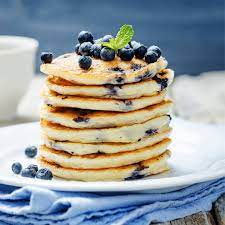

Recette de Pancakes
Les pancakes moelleux sont parfaits pour un délicieux petit déjeuner. Voici comment préparer de délicieux pancakes maison.

Ingrédients
- 1 tasse de farine tout usage
- 2 cuillères à soupe de sucre
- 1 cuillère à soupe de poudre à pâte
- 1/2 cuillère à café de sel
- 1 tasse de lait
- 1 œuf
- 2 cuillères à soupe de beurre fondu
- 1 cuillère à café d'extrait de vanille
Instructions
- Dans un grand bol, mélangez la farine, le sucre, la poudre à pâte et le sel.
- Dans un autre bol, battez l'œuf, puis ajoutez le lait, le beurre fondu et l'extrait de vanille. Mélangez bien.
- Versez le mélange liquide dans le mélange sec et remuez jusqu'à ce que la pâte soit lisse.
- Chauffez une poêle antiadhésive à feu moyen et graissez-la légèrement avec du beurre ou de l'huile.
- Pour chaque pancake, versez environ 1/4 de tasse de pâte dans la poêle chaude.
- Cuisez jusqu'à ce que des bulles se forment à la surface, puis retournez le pancake et faites cuire de l'autre côté jusqu'à ce qu'il soit doré.
- Répétez l'opération avec le reste de la pâte.
C'est tout ! Profitez de vos délicieux pancakes moelleux.
Bon appétit !